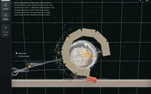
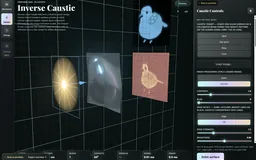
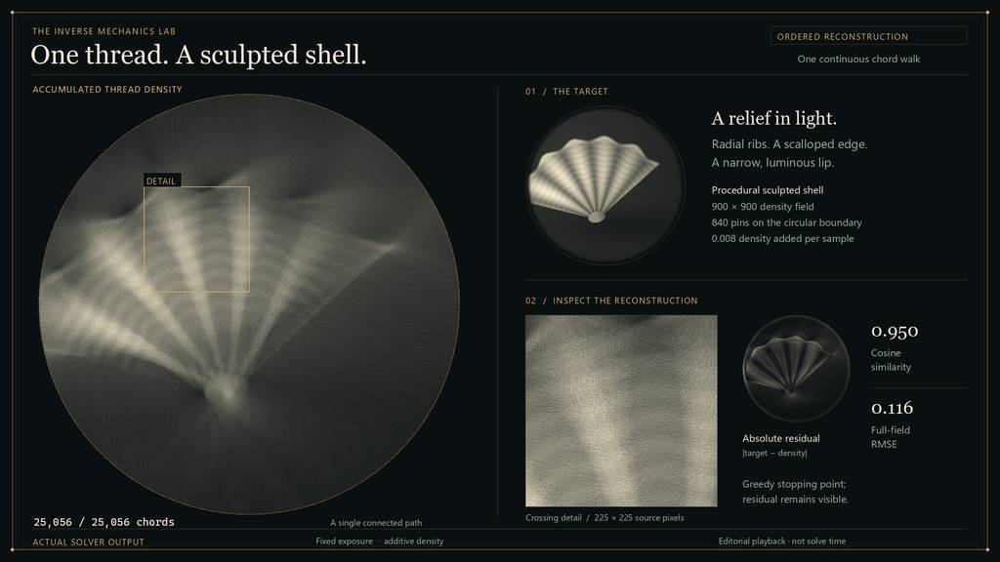
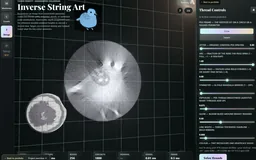

Inverse Mechanics & Optics
Place the bodies, choose their destinations, then search for the kicks that get them there—with adjustable preferences for tumbling, impacts or detours through the scene. A C++/WASM simulator makes each candidate testable and replayable. The optical bench asks the same inverse question of caustics, shadows and thread art.
Explore connections Brochure · 5 chapters ↓
Open the application, then follow what changes
Choose an outcome and search for the physical parameters that produce it: a kick that reaches target poses, a lens that forms a caustic image, or threads that resolve from a chosen viewpoint. Forward simulation supplies the evidence for each proposed design.
-
01
Specify a target
Place desired poses, an optical image or a viewing constraint.
-
02
Propose a design
Change impulses, optical shape or geometric arrangement.
-
03
Run the physics
Simulate the motion or image formation produced by those parameters.
-
04
Inspect the miss
Compare with the target and replay the resulting solution.
Use and inspect Inverse Mechanics & Optics
Choose a destination and search for a launch that gets an object there, then replay the result. Related optical and thread-art tools ask the same inverse question with different models. The recordings come from the working application; the thread study also includes a labeled replay of its solver output. The live mechanics editor uses the C++ solver compiled to WebAssembly.
Choose the ending. Solve for the motion.
A simulation normally tells you what happens next. Here the ending is part of the input: reach these poses, perhaps after tumbling or colliding along the way. It is a small, playable study of an unusual animation tool—directing simulated motion through goals rather than keyframing every event.
Start with a scene, place the target poses and choose the allowed launch strength. Search, inspect the predicted paths, then replay the candidate through the same physics kernel. Position, orientation, settling and contact preferences describe the result you want; the optimizer searches release timing, force and where to apply it.

Recorded examples · 2Inverse motionTarget poses are connected by an optimized kick and simulated trajectories.＋
The route can matter as much as the destination
Tumbling rewards rotation along the path. Hard impact rewards the strongest environment strike for a single launch, or the A–B strike for a two-object launch. The per-object Impact ring counts any body contact for that object. Scene collisions counts separate qualifying strikes on fixed or prescribed-motion scenery, including the floor and walls; movable clutter does not count.
Use a wall, stair or doorway where the target leaves room for a detour. Increasing a contact weight cannot create a reachable collision when the allowed kick never gets the body there. The recordings keep partial matches visible alongside successful examples.
| Try a setup | What it configures | What to compare |
|---|---|---|
| Ramp · hard environment strike | Impact +1; Reach target .25; impulse bound 8 N·s | One harder strike while retaining a useful target match |
| Bank shot · more scene hits | Scene +1; Reach target .25; bounce .65; bound 10 N·s | Multiple contacts rather than just one strong hit |
| Rendezvous · hard A–B strike | Impact +1; Reach target 1; bound 8 N·s | The collision between the two launched bodies |
Launches, contact and settling
10 recordings
A moving lever in the path
A tilting obstacle makes the target harder
Target a strong impact
A trajectory through stair contacts
Reach the hook
Find a route through the ring cage
Require contact, then pass through the doorway
Finish at rest
Compare tumbling target variants
With and without a contact requirement
A search result is only as good as its forward simulation
The trajectory planner searches release time, push direction, force, and application point, including sequences of pushes. Every candidate runs through the same C++ rigid-body kernel used to execute the chosen shot.
This sits alongside a research direction I find fascinating: controlling simulated animation by searching and browsing possible motions. Twigg and James’s Many-Worlds Browsing is a useful reference for that direction; this workbench uses its own bounded trajectory search, not a reproduction of their system.
The search is bounded and contact changes are discontinuous. A reported match is evidence for that particular trial, not proof that the optimizer finds every feasible motion. Replaying the result and checking its contacts are part of the workflow.
Impact measurements now include every simulation substep. Previously an impact resolved early in a frame could vanish from the score. In the three audited setups, positive versus neutral preference raises ramp peak impulse from 2.42 to 3.93 N·s, bank-shot scene contacts from six to seven, and A–B impulse from 4.03 to 5.16 N·s. These are specific deterministic trials, not an aggregate success rate.
Choose an image. Shape the light.
The optical bench asks the same inverse question with a different forward model. Choose a caustic image, optimize a freeform lens height field, then inspect the surface, rays and receiver together. Illumination and surface parameterization constrain what can actually be reproduced.
The checkerboard is a useful stress case: a requested sharp target does not guarantee a sharp reconstruction. The bird and ray-inspection recordings show the intended workflow; the difficult example makes its current limits visible.
Not every image suits this smooth height-field solver. Tiny alternating details and abrupt jumps from dark to bright demand concentrated changes in ray density. The finite surface grid, regularization and light-source blur limit what survives at the receiver. Increasing contrast can make a target look stronger while making its reconstruction worse; clipping also throws away useful intermediate tones.
Start with broad shapes and moderate contrast. Compare the actual receiver with the processed target, then try a little blur or gentler contrast. These are limits of this model and search, not a claim that high-contrast caustics are impossible: specialized caustic-design methods tackle much sharper targets.
Surface, illumination and reconstruction limits
4 recordings
Recover a light-shaping surface
Inspect the rays behind the image
The same surface under different illumination
A checkerboard target stresses the fit

Recorded examples · 1Inverse optical designTarget, lens and projected result form one inspectable comparison.＋
One thread. A field of tone.
A thread has no shading of its own. The image appears where many chords overlap. Broad, smooth tones often work well because many crossings can share the load. The first Shaded forms study shows that construction; the new detailed piece asks how much more shape and tone finer threads can recover.
The Study plate turns the film’s presentation into an interactive mode. Choose either recorded study, play or scrub its chord sequence, inspect the target and residual, and move the detail view across the reconstruction. It replays a saved solve rather than recomputing the optimization at playback speed. Return to the Strings workbench to change the target or solve settings.
Finer sampling makes the crossings less coarse, but more thread is not a guarantee of an exact image. On the same shell target and a common 300 × 300 comparison grid, the new solve reduces raw image error by 11.7% versus the standard 300² study and 1.5% versus the previous 520² maximum-detail settings. Several settings change together: field resolution, pin count, deposit and stopping floor. The greedy walk still leaves a visible residual; the fine growth rings and dark gaps remain difficult.
The Fourier analogy is useful, but incomplete. The available building blocks are peg-to-peg chords, not independent sine waves. A sharp straight feature aligned with a permitted chord can be economical. A short isolated edge may be difficult because its chord continues across areas that should stay clear. Every new thread adds density; it cannot cancel an earlier crossing.
Select Strings in the live project and choose Check this image. A short background solve compares the current target with two tone alternatives, showing each target, reconstruction and residual. Treat lower error as a better match to that particular processed target—not proof of a better picture. Inspect what a tone adjustment removes as well as what it makes easier to draw.
Try Shaded forms, Straight light and Fine weave before loading a photo. The check is a fixed-budget pilot for the connected-thread model. Peg layout, thread strength, image scale and the full solve budget can change the result; the separate local-stroke drawing modes have different constraints. In the spatial variant, peg height adds another control, making the picture and its off-axis thread bundle worth inspecting together.
| Image trait | Why it matters | What to try |
|---|---|---|
| Broad tonal structure | Many overlapping chords can share a gradual density change. | Keep useful midtones; inspect the shaded-forms target. |
| Long aligned features | A permitted chord may explain a sharp feature with little waste. | Try rotation or a different peg layout; alignment is not a guarantee. |
| Tiny isolated marks or clear holes | Chords add density beyond the desired mark and cannot subtract it. | Crop larger, soften tiny detail, or compare a local-stroke mode. |
| Strong contrast | Can clarify the subject, but also demand unreachable transitions. | Compare the target and residual before accepting a tone suggestion. |
The first study and a closer inspection
Smooth shading, built one chord at a time
Read the crossings up close
Spatial thread art and earlier recordings
2 recordings
A thread image becomes a spatial bundle
Reconstruct an image with connected threads
The recorded study, in your hands
The recorded study, in your hands
Choose a study, scrub the actual chord order and inspect where tone resolves into individual crossings.
Draws with Canvas 2D with a worker reconstructing the saved chord density.
Artifact
Export
Purpose Inspect two actual connected-thread fits, including their unresolved detail.
Made with Application solver output; fixed exposure, original chord order and procedural target.
Demonstrates A larger, finer solve can recover more tone; its remaining residual still exposes the limits of the chosen chords.
Wheel over the scene may zoom; move outside it to scroll the page.

The layout began as an offline solver replay for the film. This mode makes the same construction directly inspectable; the ordinary Strings workbench remains available for new solves.
Suspended · activate to run; playback pauses after the full panel leaves the vertical viewport.

Recorded examples · 2Inverse line artChord placement and line density reconstruct an image.＋
More recorded views · 1
Current scope
- Mechanics searches a bounded control space and can miss a feasible solution; it is not a global reachability guarantee.
- The optical bench is a 2.5D study with a restricted parameterization; arbitrary target patterns may be unreachable.
- Fast contact remains a discrete approximation: optional adaptive substeps and box-only speculative CCD reduce tunnelling, but do not guarantee swept collision handling for all shapes. The new objective presets enable these safeguards.